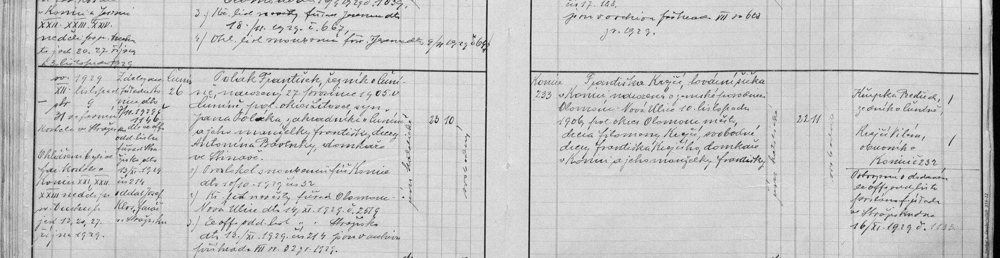

Text z matriky a překlad
Přepis originálu
[Svazek a str.] sv. XII, str. 31 [Rok, měsíc, den a místo oddavek] 1929, listopad 9, ve farním kostele ve Strážisku [Oddávající kněz] Z delegace far. úřadu Konice dto 7/11. 1929 č. 1146, dle se off. odd. listu far. úřad Strážisko dto 13/XI. 1929 č. 214 oddal Josef Klos, farář ve Strážisku [Ohlášeni] Ohlášeni byli ve far. kostele v Konici XXI., XXII., XXIII. neděli po sv. Duchu, t. j. 13., 20., 27. října 1929 [Ženich – bydliště a č. domu] Čunín 26 [Ženich] Polák František, řezník v Čuníně, narozený 27. prosince 1905 v Čuníně, pol. okres Litovel, syn Jana Poláka, zahradníka v Čuníně, a jeho manželky Františky, dcery Antonína Bavlnky, domkáře ve Stinavě. 1) Ohl. protokol snoubenců f. ú. Konice dto 10/10. 1929 č. 32 2) Křest. list nevěsty f. úřad Olomouc-Nová Ulice dto 14/XI. 1929 č. 2519 3) Se off. odd. list f. ú. Strážisko dto 13/XI. 1929 č. 214 [uložen] v archivu [Náboženství] řím.-katolické [Stáří] 23 let 10 měs. [Stav] svobodný [Nevěsta – bydliště a č. domu] Konice 233 [Nevěsta] Františka Krejčí, továrnická (?) dělnice v Konici, narozená v zemské porodnici Olomouc-Nová Ulice 10. listopadu 1906, pol. okres Olomouc-město, dcera Filomeny Krejčí, svobodné, dcery Františka Krejčího, domkáře v Konici, a jeho manželky Františky [Náboženství] řím.-katolické [Stáří] 22 let 11 měs. [Stav] svobodná [Svědci] Kupka Bedřich, zedník v Čuníně; Krejčí Vilém, obuvník v Konici 232 [Poznámka] Vyrozumění o dodání se off. odd. listu posláno f. úřadu ve Strážisku dne 16/XI. 1929 č. 1183 (?)
Překlad
9. listopadu 1929 se ve farním kostele ve Strážisku vzali František Polák, řezník z Čunína čp. 26 (narozen 27. prosince 1905 v Čuníně, 23 let, svobodný), a Františka Krejčí z Konice čp. 233 (narozena 10. listopadu 1906 v zemské porodnici v Olomouci, 22 let, svobodná). Ženichovi rodiče: Jan Polák, zahradník v Čuníně, a Františka, dcera Antonína Bavlnky, domkáře ve Stinavě. Nevěsta byla nemanželská dcera Filomeny Krejčí; její dědeček František Krejčí byl domkář v Konici. Oddával strážišťský farář Josef Klos z pověření konického faráře, svědky byli zedník Bedřich Kupka z Čunína a obuvník Vilém Krejčí z Konice. Domkář = majitel malého domku s malým nebo žádným polem.